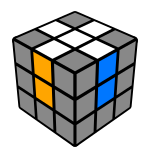

Krzyż
Powinieneś już wiedzieć o krzyżu w Metodzie dla początkujących. Etap ten jest możliwy do wykonania intuicyjnie. Przy odpowiedniej praktyce krzyż można łatwo wykonać w mniej niż 5 sekund.

Powinieneś już wiedzieć o krzyżu w Metodzie dla początkujących. Etap ten jest możliwy do wykonania intuicyjnie. Przy odpowiedniej praktyce krzyż można łatwo wykonać w mniej niż 5 sekund.

Zamiast rozwiązywać warstwa po warstwie, możesz rozwiązać 2 warstwy jednocześnie. Koncepcje są trudniejsze niż metoda dla początkujących, ale z praktyką F2L jest znacznie szybszy niż metoda dla początkujących. Intuicyjny F2L oznacza, że algorytmy nie są wymagane, a proces powinien mieć sens. Możesz zaoszczędzić około 20 ruchów na ułożenie, używając F2L zamiast metody dla początkujących.
Orientation of the Last Layer (OLL) solves the top face by applying algorithms. Beginner OLL (2-look OLL) has 2 steps: Orient the edges (3 algorithms) Orient the corners (7 algorithms) Some of these algorithms were already taught in the beginner method. Other algorithms can be memorized by patterns (which is a common technique for memorizing algorithms) shown in the video. To organize your progress and train the algorithms, use the 2-look OLL algorithm trainer.
Permutation of the Last Layer (PLL) solves the cube after the top face is completed. Beginner PLL (2-look PLL) has 2 steps: Solve the corners (2 algorithms) Solve the edges (4 algorithms) The corner algorithms are long, but very similar to each other. The edge algorithms are quite short and can be memorized visually. To organize your progress and train the algorithms, use the 2-look PLL algorithm trainer.